Table of Contents
- Self-driving car technology
- Full-body motion planning and control of the DARPA Robotics Challenge
- Integrated Modular Avionics (IMA) system design of the C919 project
- Control using an optimal trajectory library
- Standing balance control
- Roboray humanoid robot development
- Biped walking control
- Biped skating control
- Humanoid robot system development
- Brushless DC Motion control
- Multiple sensor integration and Sensory-motor coordination research
- GPU (Graphic Processing Unit) logic design
- DSP-based embedded active vision system development
- Realtime short-term ship motion prediction algorithm and software
- Document management software for Windows
Self-driving car technology
Self-driving car, Uber ATG, Pittsburgh, 2015-present
- System architecture and performance analysis
- Optimization-based motion planning and control
- Learning from imitation
Full-body motion planning and control of the DARPA Robotics Challenge
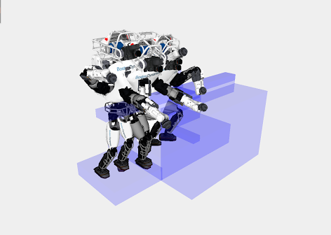 The DARPA Robotics Challenge, Carnegie Mellon University, Pittsburgh, 2013-2015
- Full-body motion planning and control
- The egress task
Integrated Modular Avionics (IMA) system design of the C919 project
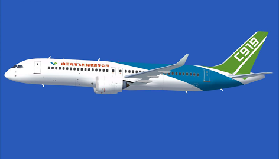 China's C919 project, GE Aviation and Aviage Systems, Ltd., 2011-2013
- Integrated Modular Avionics (IMA) system design
- High integrity ADN (Advanced Data Networks) design
- ADN switch configuration tool and analysis tool design
Control using an optimal trajectory library
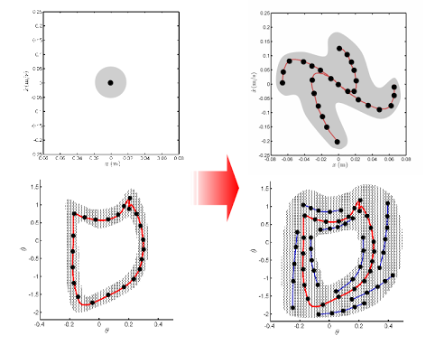 Control using an optimal trajectory library, PhD Thesis, SITUS, 2006-2011
- Trajectory-based dynamic programming
- Trajectory optimization and policy optimization
- Application to tasks with an equilibrium state (standing balance control)
- Application to tasks with a limit cycles (walking control)
Standing balance control
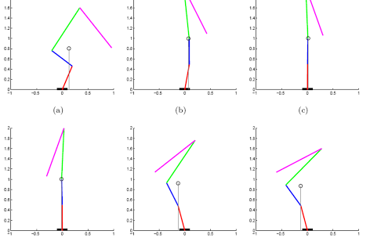 Standing Balance Control of a Humanoid Robot under constant force, Shanghai Jiao Tong University
Roboray humanoid robot development
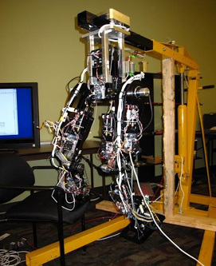 Roboray humanoid robot system development, Carnegie Mellon University, Samsung, Ltd. and SeeGrid, ltd.
- Sensor calibration
- Filter design
- Balance controller development
Biped walking control
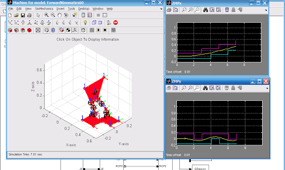 Biped walking control, Shanghai Jiao Tong University, 2007
- ZMP-based walking control
- LIMP-based walking control
Biped skating control
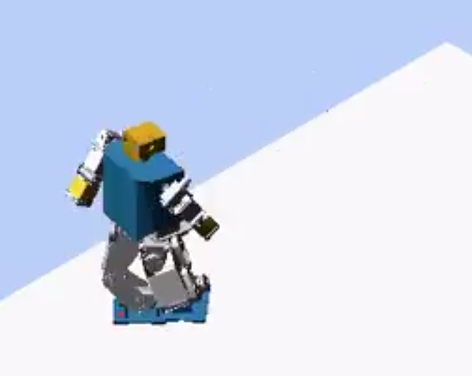 Biped skating control, Shanghai Jiao Tong University, 2007
Humanoid robot system development
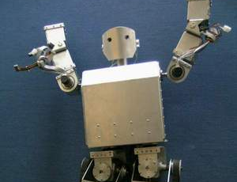 Small humanoid robot system development, Shanghai Jiao Tong University, 2006-2008
- Motion control system (HW/SW) design and implement
- ZMP-based walking control implement
Brushless DC Motion control
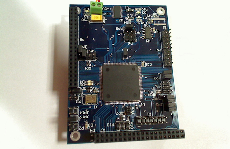 Motor control system development, Shanghai Jiao Tong University, 2007-2008
- 6 DoFs control (more DoFs than off-the-shelf products of the same size)
- High precision speed/position control
- 6 DoFs coupling control
Multiple sensor integration and Sensory-motor coordination research
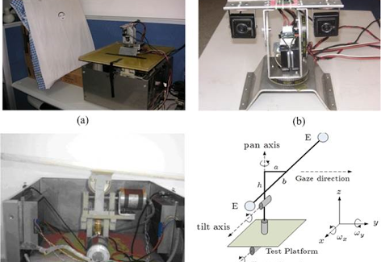 Sensory-motor coordination research, Shanghai Jiao Tong University, 2006-2007
- Basic behavior acquisition with multisensor integration.
- This research enables a robot to emerge a behavior controller based on its interaction with the environment without specific programming.
GPU (Graphic Processing Unit) logic design
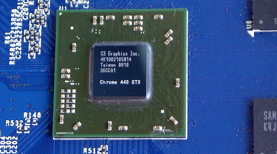 Graphic Processing Unit logic design, S3 graphics, Inc., 2003-2006
- H.264 Video Decoder Development
- Multiple Graphic Processing Unit Support Techniques Development
- Bus Interface Development
DSP-based embedded active vision system development
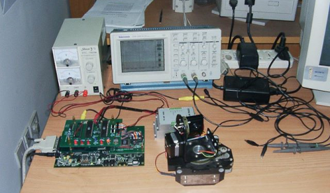 Active vision system development, Shanghai Jiao Tong University, 2001-2003
- Fast moving object tracking @ 50 Hz:
- Real-time image processing with TI C6000 floating point DSP
- Real-time display
- Real-time 2-DoFs pan-tilt camera system control
Realtime short-term ship motion prediction algorithm and software
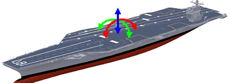 Short-term ship pose prediction algorithm and software development, Harbin Engineering University and China Ship Scientific Research Center, 2001
Document management software for Windows
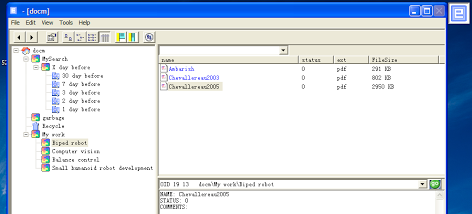 Document manage software for Windows
- A hobby software